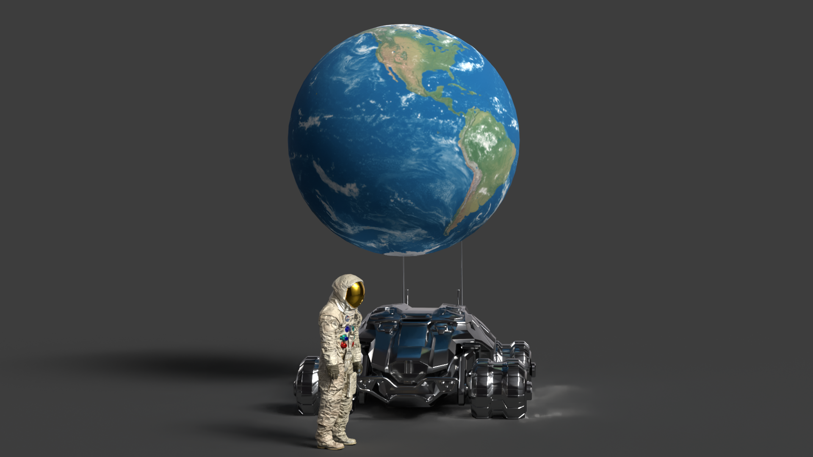

Exploring Beyond
Astronauts embark on daring adventures, equipped with cutting-edge vehicles designed to navigate both familiar and alien terrains. They begin their incredible journeys on Earth, a vibrant and life-sustaining planet that serves as their launchpad to the cosmos. With an unyielding spirit, they set their sights on the stars, venturing into the unknown to uncover new worlds and unlock the mysteries of the universe. Their courage and determination not only push the boundaries of human exploration but also inspire generations to dream of what lies beyond. From the Moon’s guiding light to the distant allure of Mars, these explorers pave the way for humanity’s future among the stars..
